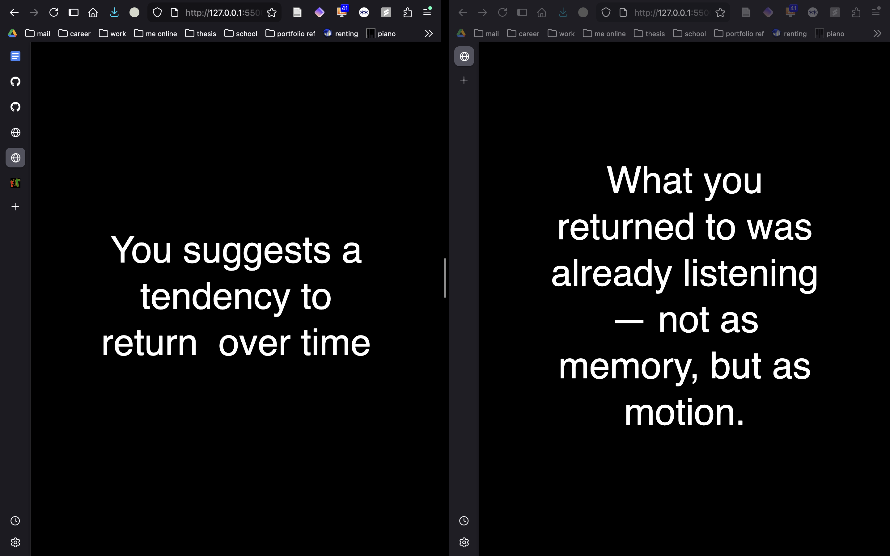

I started this week trying to get more clear about what I'm trying to actually build here. To start, I asked around and researched to find a set of key design exemplars I have enjoyed that emulate some aspect of my design goals and what I think they did successfully.
Solar protocol
This project introduces a new model for web infrastructure by designing a distributed and decentralized server protocol based on the power of the sun. Beyond the impact of community resilience over internet infrastructure, this answers questions about ownership, sovereignty, and how infrastructure can be built on logics counter to big tech.
In my research, I interviewed an oral historian who I talked a lot with about the idea of distributed knowledge systems. Allowing for our pools of knowledge to exist first and foremost on our own terms and for these records to be situated within their cultural contexts. How this relates with my project is that solar protocol illustrates an ability to create distributed self-hosted networks that feed into each but have independent hardware that exists situated in place.
Consideration: Distributed knowledge systems situated around their relationship with placeThis integrates an important thing to think about when it comes to authentification. I want the ability to see the data within the system to only be seen or interacted with based on certain behaviors. For instance, you must be in the local vicinity of the server and must have another person present at the same time in order for the dataset to load.
Consideration: Set of values based server protocols on one pageA question that comes from looking and thinking about this exemplar is, what do I mean by data? I think that originally I was thinking about things that people usually put on social media as forms of digital archives. Things like photos, videos, and maybe short text snippets (like tweets). But then I was thinking about the politics of counting and thought more about quantitative data as cultural object worth critique. This piece here depicts a list of items as database. Maybe lists is the goal here? Turning a CSV with text and numbers and counts as fields? So people add things to a CSV and then it is added to the tool in some way based on a series of customizable parameters the user has the option to adjust.
Consideration: Ritualize database of lists, counting or naming sets of items. Visualizing those items less like typical data vis but more interactive poetry of the data. (need to make some examples of what this might look like CSV -> interactive poetry that ritualizes it)What is the relationship between individuals? what does collective stewardship look like in comparison to individual control of your data/metadata labels?
So with those in mind I have been thinking more about what metaphors or comparisons I want to use to communicate my thesis'. One thought I was how can a digital archive feel more like composting as opposed to a garbage dump. The action of "dumping" is very commonly used in online archiving (think: photo dumps) which contributes to the concept of infinitely growing feeds/piles of stuff that we never really return back to.
Through more choice additions, consistent rotating/tilling/pruning, and regular use/review of the material for growth, we may take more of a compost approach. No abandoning material into the fast current of the feed but tucking it away to slowly ripen over time.
"trust that what disappears may return in a different ungovernable form" - sophie soobramamien in Archiving/CompostingMy primary thoughts about moving towards this next week is making sure that I outline a clear set of starter metaphors or interactions that I want to prototype in a relativley easy and testable way. I want to know how these ways of access data feel to the viewer and how they alter their way of relating to it. So that being said, my goals for next week is explore the raspberry pi more for hosting this site and make interactive prototypes of three ideas:
this week i developed this website. this is written by hand and hosted using github pages. up top you can find links to my research resources, a project timeline, and a way to contact me.
outside of this website, this week i experimented with a collection of computational poetry that grows and speaks to each other. in my final piece, want it to allow visitors to have data presented to them as questions rather than definitive statements. i want to explore what a poetic of data might feel like that takes algorithmic predictions and questions/ritualizes/probes at them. i tried my hand at setting up my raspberry pi to put this small dataset of poetry grammars on but i had some trouble. i aim to have that piece completed by next week

i am going into this research with a flurry of ideas and intentions. in this first week, i set out to:
in so many words, i am problematizing the daily technological rituals we use for memory keeping and personal archiving. growing up, we flipped through photo albums containing images passed from hand to hand, across border and oceans. by peering at these collections of images, noting their arrangments, we are introduced to a relationship with our heritige and history rooted in relationality, storytelling, and love.
what are the implications of using big tech platforms to digitally archive our lives? how do the logics of the platform impact the way that we remember? how do said technologies remember? how can we build remembering technologies that do not remember in order to sell you things or build an algorithmic understanding of who we are, but instead encourage us to remember?
Websites (particularly social media sites) are sorry excuses for archives. They lack in the foundational and critical affordances that archives are meant to address. The question I am posing is how to make a website (and related infrastructure) that is a proper critical archive? Or at least question the use of websites as archives through provocation.